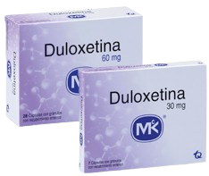

Desvenlafaxina
Efectos clínicos tardan 15 a 20 días en aparecer.
Su acción consiste en aumentar la cantidad de serotonina y norepinefrina, sustancias naturales del cerebro que ayudan a mantener el equilibrio mental.
Mecanismo de Acción
Inhibidor selectivo de la recaptación de serotonina y noradrenalina (IRSN)
Indicaciones
Depresión mayor
Contraindicaciones
Hipersensibilidad
Concomitante con IMAO
Administración de azul de metileno IV
Presentaciones
-
Tabletas de 50 y 100 mg
Cuidados de enfermería
No administrar con ISRS.
Dosis máxima 200 mg/día.
En insuficiencia renal grave o terminal dosis 50mg.
Vigilar aumento de la presión arterial.
Control riguroso en pacientes con antecedentes de comportamiento suicida.
Efectos adversos
Frecuentes:Taquicardia, palpitaciones, tinitus, vértigo, vómito, diarrea, hipertensión arterial, somnolencia, déficit de atención, hiperhidrosis, disminución de la libido, sofocos.
Poco frecuentes:Disgeusia.
Duloxetina
Antidepresivo que ayuda a mejorar el estado de ánimo y a reducir los niveles de dolor. Los efectos clínicos tardan 15 a 20 días en aparecer.
Mecanismo de Acción
Inhibidor de la recaptación de serotonina y de noradrenalina. Inhibe débilmente la recaptación de dopamina.
Indicaciones
Depresión mayor
Trastorno ansiedad
Dolor neuropático diabético
Fibromialgia
Contraindicaciones
Hipersensibilidad
Concomitante con IMAO
Insuficiencia renal o hepática grave
HTA no controlada
Glaucoma de angulo estrecho
Presentaciones
-
Capsulas de 30 y 60 mg
Cuidados de enfermería
No administrar con ISRS.
Dosis máxima 120 mg/día.
Vigilar presión arterial.
Vigilar riesgo suicida.
Administrar sobre la comida de la noche.
Prevención de caídas, especialmente en personas de edad mayor.
Evitar su suspensión brusca debido al riesgo de aparición de síntomas de retirada.
Efectos adversos
Frecuentes:Síntomas gastrointestinales (nauseas, vómitos, diarrea, estreñimiento), cefalea, mareo, somnolencia, temblores, parestesia, sueños anormales, agitación, palpitaciones, aumento de la tensión arterial, dolor musculoesquelético, visión borrosa, fatiga, sequedad de la boca.
Poco frecuentes:Disfunción sexual persistente, enfermedad pulmonar intersticial.
Venlafaxina
Antidepresivo que mejora el estado de ánimo y reduce los síntomas de ansiedad.
Los efectos clínicos tardan entre 15 y 20 días

Mecanismo de Acción
Potentes inhibidores de la recaptación de serotonina y noradrenalina. Inhibe débilmente la recaptación de dopamina.
Indicaciones
Depresión mayor
Ansiedad generalizada
Trastorno de pánico
Ansiedad social
Contraindicaciones
Hipersensibilidad
Concomitante con IMAO
Presentaciones
-
Tabletas de 37.5, 50, 75 y 150 mg
Cuidados de enfermería
No administrar con ISRS.
Dosis máxima 375 mg/día.
Monitoreo de la frecuencia cardiaca y presión arterial.
Evitar la suspensión brusca, debido al riesgo de aparición de síntomas de retirada como estrés o ansiedad.
Uso con precaución en pacientes con antecedentes de convulsiones por el riesgo de producirlas.
Efectos adversos
Frecuentes:Astenia, escalofríos, hipertensión, palpitaciones, estreñimiento, xerostomía, náuseas, vómito, sueños anormales, confusión, sedación, cefalea, somnolencia, vértigo, insomnio, náuseas, disminución del apetito, diaforesis, boca seca.
Poco frecuentes:Midriasis, visión borrosa, trastornos menstruales, afectación en la micción, anorgasmia.